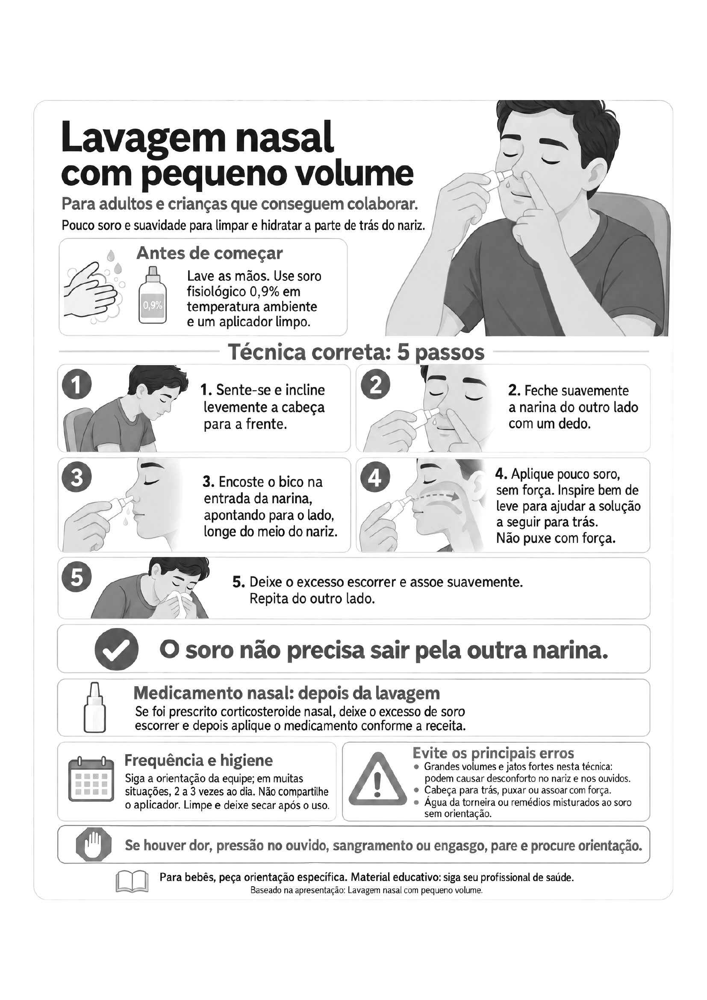

Lavagem nasal com pequeno volume

Ler o texto do infográfico
Para adultos e crianças que conseguem colaborar. Pouco soro e suavidade para limpar e hidratar a parte de trás do nariz.
Antes de começar
Lave as mãos. Use soro fisiológico 0,9% em temperatura ambiente e um aplicador limpo.
Técnica correta: 5 passos
- Sente-se e incline levemente a cabeça para a frente.
- Feche suavemente a narina do outro lado com um dedo.
- Encoste o bico na entrada da narina, apontando para o lado, longe do meio do nariz.
- Aplique pouco soro, sem força. Inspire bem de leve para ajudar a solução a seguir para trás. Não puxe com força.
- Deixe o excesso escorrer e assoe suavemente. Repita do outro lado.
O soro não precisa sair pela outra narina.
Medicamento nasal: depois da lavagem
Se foi prescrito corticosteroide nasal, deixe o excesso de soro escorrer e depois aplique o medicamento conforme a receita.
Frequência e higiene
Siga a orientação da equipe; em muitas situações, 2 a 3 vezes ao dia. Não compartilhe o aplicador. Limpe e deixe secar após o uso.
Evite os principais erros
- Grandes volumes e jatos fortes nesta técnica: podem causar desconforto no nariz e nos ouvidos.
- Cabeça para trás, puxar ou assoar com força.
- Água da torneira ou remédios misturados ao soro sem orientação.
Se houver dor, pressão no ouvido, sangramento ou engasgo, pare e procure orientação.
Para bebês, peça orientação específica. Material educativo: siga seu profissional de saúde.